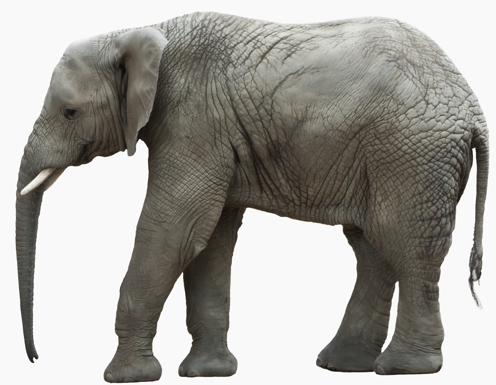

Elefanternes verden
Elefanter (Elephantidae) er en familie i klassen pattedyr med traditionelt to nulevende arter, den afrikanske og den asiatiske. Ny forskning tyder dog på, at den afrikanske elefant skal opdeles, så der derfor i alt findes tre arter.
Elefanter fødes med en ofte rødlig, sparsom hårvækst. Håret bliver mørkere med alderen, og med tiden slides det stort set væk de fleste steder. Dog ses hår næsten altid på hoved og hale.
Elefanter kommunikerer ved hjælp af kropssprog og meget dybe rumlelyde, som det menneskelige øre knapt kan opfatte. Ved hjælp af lydene kan elefanterne kommunikere med hinanden over meget store afstande – flere kilometer.
Tænder
Udover elefantens karakteristiske stødtænder har den også fire store kindtænder, der slides, når elefanten spiser. Disse kindtænder nedslides over en periode på 10 år. Nye kindtænder er i mellemtiden vokset ud bag de gamle, som skubbes ud af munden. Elefanten kan skifte kindtænder seks gange, og når det sidste sæt er udtjent, vil den dø af sult.
Unger
Elefanter er et pattedyr. Ungerne hedder elefantkalv. Når en elefantkalv fødes, har den næsten ingen styrke i sin snabel. Derfor dier den med munden. Det tager flere måneder, før den opnår fuld kontrol over sin snabel. En elefant er drægtig i 2 år ad gangen, og kan få cirka 4 unger i sin levetid.